Téléchargez tout d'abord AviSynth ici et installez-le (l'installation minimale suffira).
Téléchargez ensuite MeGUI ici et installez-le.
Allez dans le dossier Programmes/megui/tools (ou Program Files/megui/tools pour XP et avant) et créez-y un dossier nommé neroaacenc.
Téléchargez l'encodeur AAC de Nero ici.
Dans l'archive zip récupérée, cherchez le fichier neroAacEnc.exe et copiez-le dans le dossier neroaacenc que vous avez créé. Supprimez alors sereinement l'archive, nous n'en avons plus besoin.
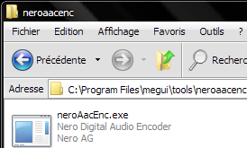
Si vous ne l'avez pas déjà, téléchargez le codec DV Panasonic ici, décompressez le dossier et installez le codec.
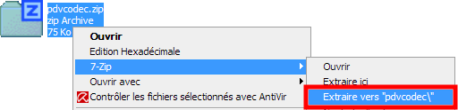
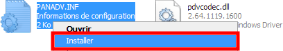
Windows s'étant fait sa propre copie du codec, vous pouvez supprimer le dossier pdvcodec et pdvcodec.zip.
Pour finir, redémarrez votre PC sinon MeGUI plantera par la suite !
Au démarrage, MeGUI vous informe normalement que de nouvelles mises à jour sont disponibles, dites oui, autrement suivez le guide.
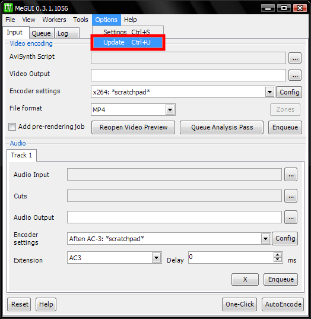
Ne gardez cochés que le groupe MeGUI et les éléments x264, mp4box, fluxsmooth, tomsmocomp et STx264. Puis cliquez sur Update. Lorsqu'on vous demande quels profils vidéo importer, cochez tous ceux en "x264: Unrestricted 1pass Const. Quality ...".
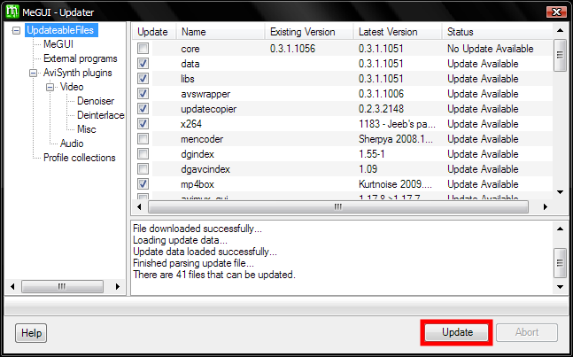
ps : Avec ces outils, vous pourrez compresser les vidéos exportées par un logiciel de montage. Si un jour vous souhaitez réencoder une vidéo compressée ou un DVD, repassez par ici et téléchargez tous les paquets dans le doûte.
pps : Pour installer ultérieurement d'autres profils de compression x264, il vous suffit de faire un clic droit sur STx264 et sélectionner Force (re)install.
La mise à jour terminée, vous pouvez fermer cette fenêtre.
La version de x264 installée par l'update n'étant pas la plus récente, téléchargez la dernière ici. Passez par n'importe lequel des liens mirror en face du type de votre processeur (si vous ne savez pas choisissez 32bit). Enregistrez l'exécutable dans Programmes/megui/tools/x264, vous y écraserez l'ancien.
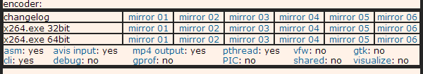
Allez à présent dans le menu Options->Settings pour indiquer à MeGUI où se trouve le fichier neroAacEnc.exe.
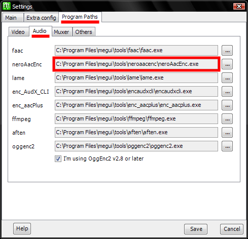
Tant que vous êtes dans les options, vous pouvez aussi fixer Default Priority à Normal (jamais au delà !) pour accélérer les compressions et décocher UseAutoUpdate pour que lors du lancement de MeGUI celui-ci arrête de vous proposer de télécharger le reste des plugins dont nous n'avons pas besoin.
Retour à l'écran de base de MeGUI. Dans Encoder settings, sélectionnez un des profils en "x264: Unrestricted 1pass Const. Quality ..." et cliquez sur Config. Tous ces profils donneront la même qualité en sortie mais les plus lents donneront une taille de fichier plus faible. L'ordre du plus rapide au plus lent est : Fast, Balanced, HQ, Extra Q et Insane. Comme sur l'image, HQ est un bon compromis que je vous recommande.
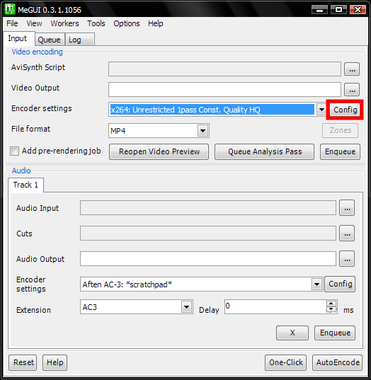
Dans l'onglet Main qui apparaît, fixez Quality à 25,0 et cochez la case Advanced Settings.
Une qualité à 25,0 vous donnera une qualité excellente pour un bitrate inférieur à 1000kbps. Sachez aussi que 18,0 est couramment utilisé sur Internet comme qualité maximale.
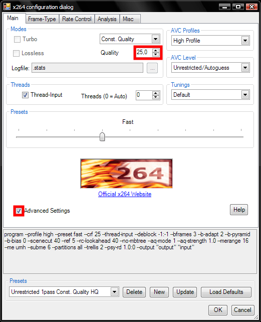
Dans l'onglet Frame-Type, si (et seulement si) la case Keep some B-Frames as reference est cochée, décochez-la et ajoutez la ligne de commande --b-pyramid normal dans l'onglet Misc. Cette modification est due à une mise à jour récente de x264 pas encore répercutée dans MeGUI.
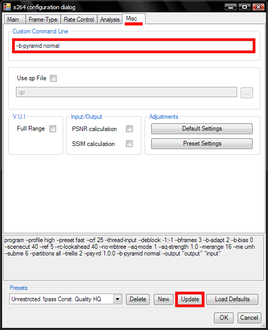
Cliquez enfin sur Update et fermez la fenêtre de configuration de x264.
Je vous recommande de mettre à jour ainsi tous les profils afin de pouvoir tous les tester par la suite.
A nouveau sur l'écran de base de MeGUI, cliquez sur le bouton Config à droite de la sélection du profil audio "Nero AAC: *scratchpad*".
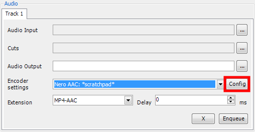
Sélectionnez Variable Bitrate, fixez le facteur de qualité à 0,4 et on Update le profil *scratchpad*.
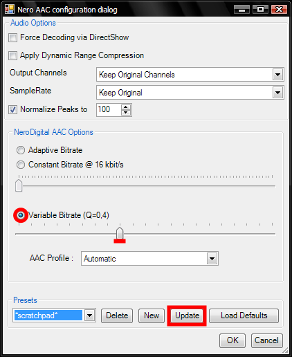
Ce facteur de qualité donne un débit autour de 125kbps, ce qui pour du AAC est déjà une excellente qualité.
Ne fixez jamais le facteur de qualité en dessous de 0,31, car la méthode de compression est alors différente et laisse des artefacts dans le son quelle que soit la qualité choisie.
Voilà, MeGUI est installé et paramétré. Vous pouvez à présent passer à la compression.